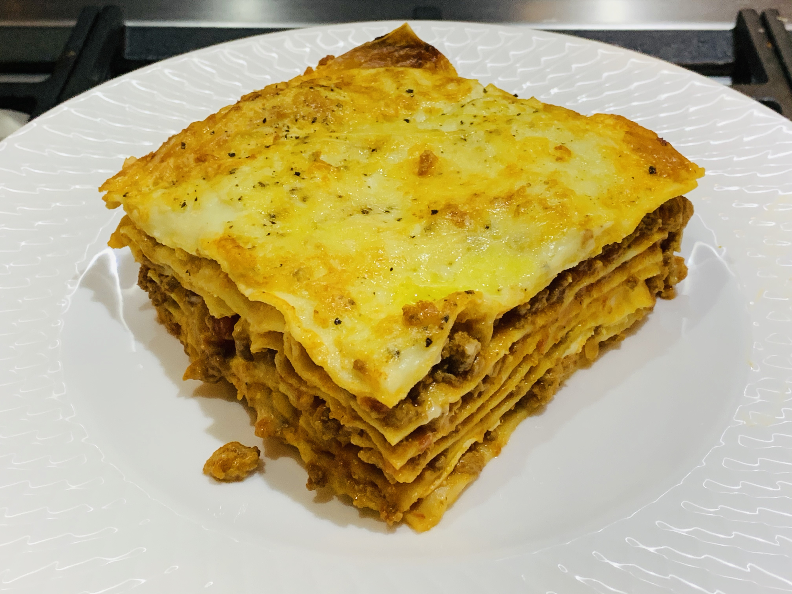

Lasagna

Lasagna is a popular traditional Italian dish made with layers of pasta, rich meat sauce,
creamy béchamel sauce and melted cheese, originating from the Emilia-Romagna region of
Italy. This recipie serves 8.
- Beef mince, 300g
- Carrots, 50g
- Yellow onion, 50g
- Tomato puree, 300g
- Olive oil, 1 tbsp
- Salt and Pepper to taste
- Pancetta, 150g
- Celery, 50g
- Red wine, 100g
- Vegetable both to taste
- Butter, 70g
- Whole milk, 1l
- 00 Flower, 70g
- Nutmeg to taste
- Parmigiano Reggiano, 150g
- Lasagna sheets, 300g
- To prepare lasagne alla Bolognese, start with the meat sauce. Prepare the vegetable broth
and ensure to keep it warm. Then take the pancetta bacon, cut it into strips first then chop
well.
- Seperately, finely chop the carrots, onion, celery and set aside.
- In a saucepan, pour a drizzle of oil and the pancetta bacon. Use a ladle to spread it
well and let it brown for a few minutes. Then add the chopped vegetables and cook for
5-6 minutes. Then add the minced meat. Stir and raise the heat. Let the meat brown
slowly, it must be well browned to seal the juices and be soft.
- Deglaze with red wine and let it evaporate completely before adding the tomato puree.
The Bolognese sauce must cook for two hours. When it starts boiling again, you can add
some hot broth, one or two ladles, and let the sauce cook for another couple of hours at
least.
- For the béchamel sauce. Heat the milk in a saucepan, without boiling it. In another pan,
place the butter and let it melt.
- Add the flour to the butter in one go and cook for a few minutes (whilst mixing) until you get a golden roux.
Then, pour the hot milk in three times, mixing well.Add salt and flavor with nutmeg.
Continue to mix until you get a creamy béchamel.
- For the composition of the Lasagna, take a large 12x8 inches (30x20 cm) lasagna pan and grease the bottom. Add a thin layer
of béchamel and one of Bolognese sauce. Then place the first sheet, add a layer of béchamel
and a layer of meat sauce. Add grated Parmesan cheese and place another sheet of pasta on top
- Add another layer of béchamel and one of meat sauce, add grated cheese and continue like this
until you have 5 layers. After placing the last sheet, add the Bolognese sauce.
- In order to completely cover the pasta sheet. Sprinkle with grated cheese, add some tufts of
butter and bake in a preheated oven at 170C for 40 minutes.
Home